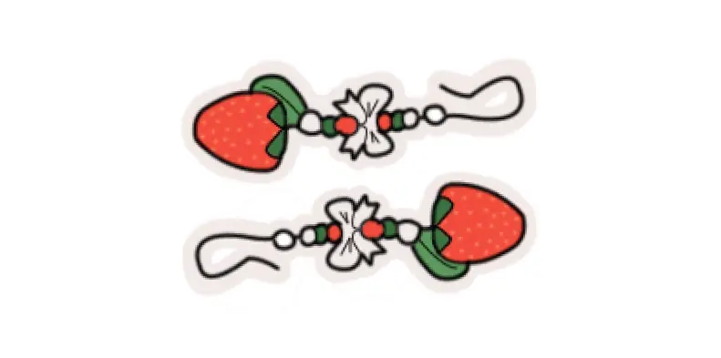
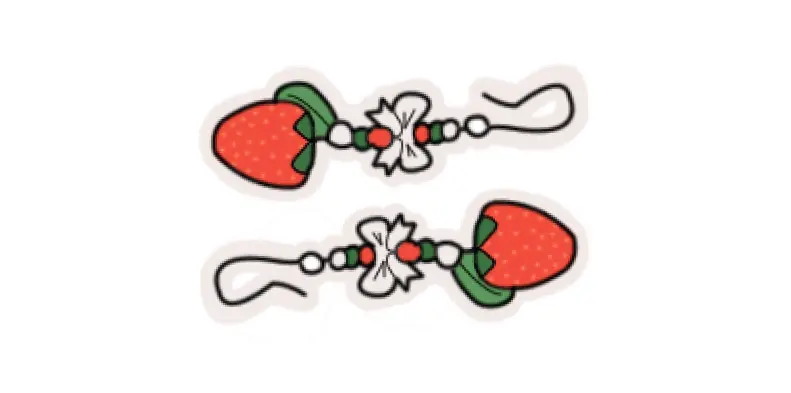

Min rejse i pixels
Udvikling i fokus
På denne side præsenteres et udvalg af de større projekter, jeg har arbejdet med i løbet af første semester på multimediedesigneruddannelsen ved KEA. Materialet er vist i sin originale form for at give et ærligt indblik i min udvikling og læringsproces gennem semesteret.


 

HELLO WORLD
I denne opgave har jeg opnået en grundlæggende forståelse for webudvikling med fokus på HTML og CSS. Arbejdet tog udgangspunkt i en fastlagt wireframe og fulgte princippet mobile first for at sikre responsivt design.
Særligt CSS Grid bød på udfordringer – det var uden tvivl projektets største hurdle. Heldigvis er vi nu blevet bedre bekendte, og forholdet kan bedst beskrives som "frenemies". Desuden blev der arbejdet med Gestalt-lovene og farveteori, herunder forskellen på skærmfarver og trykte farver.

EMNESITE
Dette projekt har haft fokus på grundlæggende UX/UI og introduceret forskellige iterative udviklingsmetoder. Jeg har opnået solid erfaring med Figma, især til at udvikle og teste prototyper, inden kodningen af det endelige website påbegyndes.
Der er blevet arbejdet med forskellige former for brugertests – både i planlægningsfasen og efter den tekniske implementering.
Desuden har jeg i løbet af projektet stiftet bekendtskab med Java og fået en første introduktion til programmeringssprogets grundprincipper.

EMERGENCYSITE
I dette projekt har jeg arbejdet med at styrke mine færdigheder i Java og udforske, hvordan sproget kan integreres med visuelle effekter og animationer i CSS for at skabe et funktionelt og engagerende website.
Et centralt element i projektet var brugen af SVG-grafik, som blev anvendt som bindeled mellem Java og CSS-animationerne.
Projektet blev udviklet med udgangspunkt i et udleveret wireframe. Denne faste struktur gav mulighed for at fokusere på den tekniske integration og de visuelle detaljer.
Jeg blev også introduceret til LOGOTYPE under dette forløb, og fik udvidet min HTML viden med forms elementer.

LOTTIE
I dette projekt blev jeg introduceret til Adobe After Effects og opnåede grundlæggende viden om programmets anvendelsesmuligheder inden for motion graphics og animation.
Derudover arbejdede jeg med forskellige billedfiler og lærte, hvilke formater der egner sig bedst i forskellige sammenhænge. Jeg fik samtidig erfaring med billedbehandling i både Photoshop og Lightroom, herunder justering af farver, lys og komposition.
Websitet er udviklet med udgangspunkt i et udleveret wireframe, som dannede grundlag for layout og struktur.
VIRKSOMHEDSSITE
Dette projekt markerede vores første gruppearbejde og introducerede os til GitHub som et centralt samarbejdsværktøj. Derudover fik vi mulighed for at anvende mange af de færdigheder og metoder, vi har tilegnet os gennem semesteret, i praksis.
Vi arbejdede i tæt samarbejde med en ekstern virksomhed, hvilket var første gang, vi skulle integrere eksterne perspektiver og reelle behov i vores løsning. Det gav projektet en ekstra dimension og en forsmag på samarbejdet med kunder i en professionel kontekst.
Projektet gav mig desuden værdifuld indsigt i gruppearbejde og samarbejdsdynamikker – erfaringer, der afspejler, hvordan hverdagen fungerer i den professionelle verden.